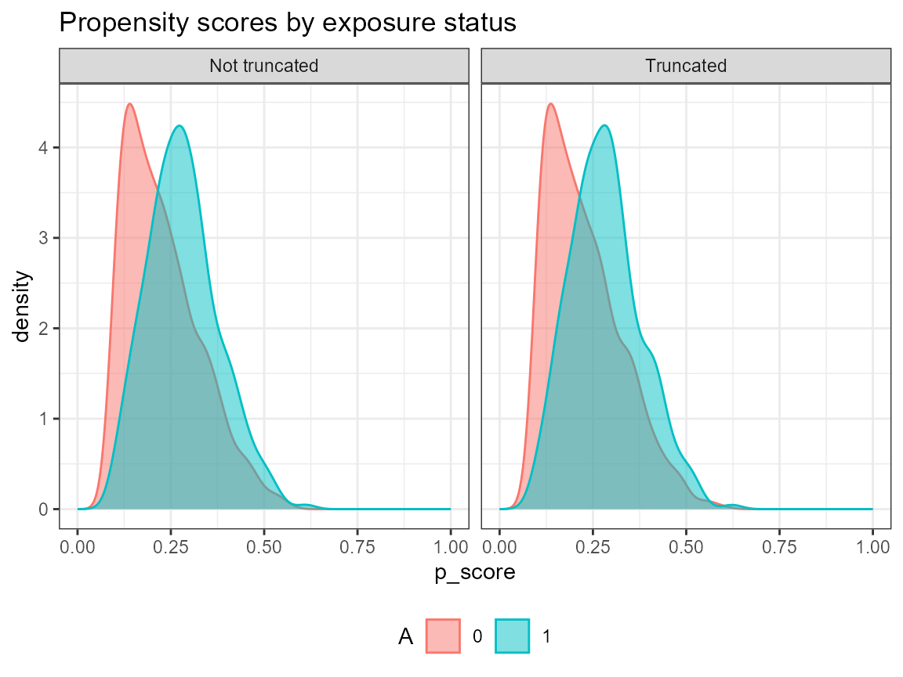

Load the Rotterdam Breast Cancer data set
# data(bcrot)
load("../data/bcrot.RData")Descriptive Analysis
Compare descriptively QOL for those who do and do not take hormonal therapy
# qol ~ hormon
plot.qol <- ggplot(bcrot, aes(x=qol, after_stat(density)), fill=as.factor(hormon)) +
geom_histogram(aes(fill=as.factor(hormon)), color=c("#e9ecef"), binwidth = 2) +
facet_grid(as.factor(hormon) ~ .) +
labs(x = "Quality of life", y = "Density") +
scale_fill_manual(values=c("#69b3a2", "#337CA0"),
name="Hormonal\ntreatment",
breaks=c("0", "1"),
labels=c("no", "yes")) +
theme_light()
plot.qol
# age ~ hormon
plot.age <- ggplot(bcrot, aes(x=age, after_stat(density)), fill=as.factor(hormon)) +
geom_histogram(aes(fill=as.factor(hormon)), color=c("#e9ecef"), binwidth = 2) +
facet_grid(as.factor(hormon) ~ .) +
labs(x = "Age", y = "Density") +
scale_fill_manual(values=c("#69b3a2", "#337CA0"),
name="Hormonal\ntreatment",
breaks=c("0", "1"),
labels=c("no", "yes")) +
theme_light()
plot.age
# Lymph nodes ~ hormon
plot.nodes <- ggplot(bcrot, aes(x=nodes, after_stat(density)), fill=as.factor(hormon)) +
geom_histogram(aes(fill=as.factor(hormon)), color=c("#e9ecef"), binwidth = 1) +
facet_grid(as.factor(hormon) ~ .) +
labs(x = "Number of positive lymph nodes", y = "Density") +
scale_fill_manual(values=c("#69b3a2", "#337CA0"),
name="Hormonal\ntreatment",
breaks=c("0", "1"),
labels=c("no", "yes")) +
theme_light()
plot.nodes
ggplot(bcrot, aes(x=enodes, after_stat(density)), fill=as.factor(hormon)) +
geom_histogram(aes(fill=as.factor(hormon)), color=c("#e9ecef"), binwidth = 0.1) +
facet_grid(as.factor(hormon) ~ .) +
labs(x = "Number of positive lymph nodes (transformed: exp(-0.12 * nodes))",
y = "Density") +
scale_fill_manual(values=c("#69b3a2", "#337CA0"),
name="Hormonal\ntreatment",
breaks=c("0", "1"),
labels=c("no", "yes")) +
theme_light()
# PgR (fmol/l), log ~ hormon
ggplot(bcrot, aes(x=pr_1, after_stat(density)), fill=as.factor(hormon)) +
geom_histogram(aes(fill=as.factor(hormon)), color=c("#e9ecef"), binwidth = 0.5) +
facet_grid(as.factor(hormon) ~ .) +
labs(x = "PgR [fmol/l] (transformed: log(pr)", y = "Density") +
scale_fill_manual(values=c("#69b3a2", "#337CA0"),
name="Hormonal\ntreatment",
breaks=c("0", "1"),
labels=c("no", "yes")) +
theme_light()Analysis
Linear Model
We compare an unadjusted naive linear model (2-groups) with a naive adjusted main-effects-only model (this is too simplistic to be plausible; and it is not robust). We can see that the unadjusted analysis is (likely) very biased - the effect reverses upon adjustment. Note that the analysis does not alert us to any positivity issues as it simply extrapolates.
# Unadjusted linear regression
lm.ua <- lm(qol ~ hormon, data = bcrot)
summary(lm.ua)
##
## Call:
## lm(formula = qol ~ hormon, data = bcrot)
##
## Residuals:
## Min 1Q Median 3Q Max
## -19.1327 -4.8698 0.5183 5.0403 16.2516
##
## Coefficients:
## Estimate Std. Error t value Pr(>|t|)
## (Intercept) 19.1327 0.1265 151.276 < 2e-16 ***
## hormon1 -2.2928 0.3751 -6.112 1.11e-09 ***
## ---
## Signif. codes: 0 '***' 0.001 '**' 0.01 '*' 0.05 '.' 0.1 ' ' 1
##
## Residual standard error: 6.502 on 2980 degrees of freedom
## Multiple R-squared: 0.01238, Adjusted R-squared: 0.01205
## F-statistic: 37.36 on 1 and 2980 DF, p-value: 1.109e-09
# Main-effects linear regression
lm.a <- lm(qol ~ hormon + age + enodes + pr_1, data = bcrot)
summary(lm.a)
##
## Call:
## lm(formula = qol ~ hormon + age + enodes + pr_1, data = bcrot)
##
## Residuals:
## Min 1Q Median 3Q Max
## -3.6246 -0.6854 -0.0094 0.6695 3.5638
##
## Coefficients:
## Estimate Std. Error t value Pr(>|t|)
## (Intercept) 22.517992 0.106599 211.24 <2e-16 ***
## hormon1 1.806415 0.062397 28.95 <2e-16 ***
## age -0.253940 0.001461 -173.79 <2e-16 ***
## enodes 1.985456 0.073795 26.91 <2e-16 ***
## pr_1 2.495491 0.008312 300.22 <2e-16 ***
## ---
## Signif. codes: 0 '***' 0.001 '**' 0.01 '*' 0.05 '.' 0.1 ' ' 1
##
## Residual standard error: 1.01 on 2977 degrees of freedom
## Multiple R-squared: 0.9762, Adjusted R-squared: 0.9762
## F-statistic: 3.054e+04 on 4 and 2977 DF, p-value: < 2.2e-16Propensity score (PS)
We saw that positivity is an issue with nodes=0 and younger ages. Here we look at how to detect this from the propensity score (PS). We begin with a simple main-effects-only PS model.
ps <- glm(hormon ~ age + enodes + pr_1,
data = bcrot,
family = binomial(link="logit"))
# add fitted values to data set
bcrot$ps <- fitted(ps)
# plot density
ggplot(bcrot, aes(ps, fill = as.factor(hormon))) +
geom_density(alpha = 0.5) +
labs(x = "Propensity score",
y = "Density",
fill = "Hormone\ntreatment") +
scale_fill_manual(values=c("#69b3a2", "#337CA0"),
name="Hormonal\ntreatment",
breaks=c("0", "1"),
labels=c("no", "yes")) +
theme_light()
# Histogram
ggplot(data = bcrot, aes(x = ps, after_stat(density), fill = as.factor(hormon))) +
#geom_histogram(alpha = 0.5, position = "identity", binwidth = 0.05) +
geom_histogram(aes(fill=as.factor(hormon)), color=c("#e9ecef"), binwidth = 0.05) +
facet_grid(hormon ~ .) +
labs(x = "Propensity score", y = "Density") +
scale_fill_manual(values=c("#69b3a2", "#337CA0"),
name="Hormonal\ntreatment",
breaks=c("0", "1"),
labels=c("no", "yes")) +
theme_light()Inverse Probability Treatment Weighting
We also find that we have some extreme weights (though, I have seen worse). The weighted data does not achieve balance in age and enodes; this could be due to lack of positivity and/or because the PS model is bad.
bcrot$w <- (as.numeric(as.character(bcrot$hormon)) / bcrot$ps) +
((1 - as.numeric(as.character(bcrot$hormon))) / (1 - bcrot$ps))
summary(bcrot$w)
## Min. 1st Qu. Median Mean 3rd Qu. Max.
## 1.008 1.035 1.073 1.854 1.206 63.482
# Plot inverse probability weights vs. index
ggplot(bcrot, aes(x = 1:nrow(bcrot), y = w)) +
geom_point() +
xlab(" ") +
ylab(" ") +
ylim(0, 65) +
theme_minimal()Use subset
We decide that the effect is ill-defined for nodes=0 and age<40; thus we create a more meaningful subset of the population for which to compare treatment with no-treatment. Note that we lose more than half (ca. 1500) of the untreated, but only 7 of the treated patients.
plot.age
plot.nodes
# restrict dataset and transformation
bcrot2 <- bcrot %>% filter(age >= 40,
nodes > 0) %>%
mutate(age.2 = age * age) %>% # add age²
select(-c(ps, w))
table(bcrot2$hormon)
##
## 0 1
## 1045 332
table(bcrot$hormon)
##
## 0 1
## 2643 339
# Main-effects and adjustes linear regression models using the subset
lm.ua2 <- lm(qol ~ hormon, data = bcrot2)
summary(lm.ua2)
##
## Call:
## lm(formula = qol ~ hormon, data = bcrot2)
##
## Residuals:
## Min 1Q Median 3Q Max
## -18.1346 -5.1450 0.4281 4.8286 16.7480
##
## Coefficients:
## Estimate Std. Error t value Pr(>|t|)
## (Intercept) 18.1346 0.1977 91.744 < 2e-16 ***
## hormon1 -1.4797 0.4026 -3.676 0.000246 ***
## ---
## Signif. codes: 0 '***' 0.001 '**' 0.01 '*' 0.05 '.' 0.1 ' ' 1
##
## Residual standard error: 6.39 on 1375 degrees of freedom
## Multiple R-squared: 0.00973, Adjusted R-squared: 0.00901
## F-statistic: 13.51 on 1 and 1375 DF, p-value: 0.0002464
lm.a2 <- lm(qol ~ hormon + age + enodes + pr_1, data = bcrot2)
summary(lm.a2)
##
## Call:
## lm(formula = qol ~ hormon + age + enodes + pr_1, data = bcrot2)
##
## Residuals:
## Min 1Q Median 3Q Max
## -3.5002 -0.6780 0.0090 0.6589 3.5119
##
## Coefficients:
## Estimate Std. Error t value Pr(>|t|)
## (Intercept) 22.958880 0.169928 135.11 <2e-16 ***
## hormon1 1.807219 0.065269 27.69 <2e-16 ***
## age -0.261386 0.002465 -106.03 <2e-16 ***
## enodes 2.029785 0.113220 17.93 <2e-16 ***
## pr_1 2.487438 0.012465 199.56 <2e-16 ***
## ---
## Signif. codes: 0 '***' 0.001 '**' 0.01 '*' 0.05 '.' 0.1 ' ' 1
##
## Residual standard error: 1.001 on 1372 degrees of freedom
## Multiple R-squared: 0.9758, Adjusted R-squared: 0.9757
## F-statistic: 1.381e+04 on 4 and 1372 DF, p-value: < 2.2e-16Estimate Marginal structural model “by hand”
First fit new more complex PS model (as we did not achieve balance earlier) and check balance. Next fit MSM by weighted lm; note the underestimated standard errors! Obtain valid SEs by sandwich estimation.
ps <- glm(hormon ~ age + age.2 + enodes + age*pr_1,
data = bcrot2,
family = binomial(link="logit"))
bcrot2$ps <- fitted(ps)
bcrot2$w <- (as.numeric(as.character(bcrot2$hormon)) / bcrot2$ps) +
((1 - as.numeric(as.character(bcrot2$hormon))) / (1 - bcrot2$ps))
# Checking balance
cobalt::love.plot(hormon ~ age + age.2 + enodes + age*pr_1,
data = bcrot2,
weights = bcrot2$w,
s.d.denom = "pooled",
thresholds = c(m = .1))


# Weights based on ~age + age.2 + enodes + age*pr_1
model_w <- lm(qol ~ hormon , weights = w, data = bcrot2)
summary(model_w)
##
## Call:
## lm(formula = qol ~ hormon, data = bcrot2, weights = w)
##
## Weighted Residuals:
## Min 1Q Median 3Q Max
## -35.763 -6.569 0.223 5.818 60.046
##
## Coefficients:
## Estimate Std. Error t value Pr(>|t|)
## (Intercept) 17.3495 0.2518 68.902 < 2e-16 ***
## hormon1 2.0708 0.3561 5.816 7.5e-09 ***
## ---
## Signif. codes: 0 '***' 0.001 '**' 0.01 '*' 0.05 '.' 0.1 ' ' 1
##
## Residual standard error: 9.347 on 1375 degrees of freedom
## Multiple R-squared: 0.02401, Adjusted R-squared: 0.0233
## F-statistic: 33.82 on 1 and 1375 DF, p-value: 7.496e-09
# Variance estimation using the robust sandwich variance estimator
(sandwich_se <- diag(sandwich::vcovHC(model_w, type = "HC"))^0.5)
## (Intercept) hormon1
## 0.2074796 0.6009953
# confidence interval
sandwichCI <- c(coef(model_w)[2] - 1.96 * sandwich_se[2],
coef(model_w)[2] + 1.96 * sandwich_se[2])Estimate Marginal structural model using the IPW package
With package ipw can do the whole MSM in one. Also has
an inbuilt plot for checking weights distribution.
ipw2 <- ipw::ipwpoint(exposure = hormon,
family = "binomial", link = "logit",
denominator = ~ age + age.2 + enodes + age*pr_1,
data = bcrot2)
bcrot2$ipw <- ipw2$ipw.weights
# Plot Inverse Probability Weights
summary(ipw2$ipw.weights)
## Min. 1st Qu. Median Mean 3rd Qu. Max.
## 1.019 1.143 1.423 2.002 1.914 40.597
ipw::ipwplot(weights = ipw2$ipw.weights,
logscale = FALSE,
main = "Stabilized weights",
xlab = "Weights",
xlim = c(1, 10))
# Marginal structural model for the causal effect of hormon on qol
# corrected for confounding using inverse probability weighting
# with robust standard error from the survey package.
model_sm2 <- survey::svyglm(qol ~ hormon,
design = svydesign(~ 1,
weights = ~ipw,
data = bcrot2))
summary(model_sm2)
##
## Call:
## svyglm(formula = qol ~ hormon, design = svydesign(~1, weights = ~ipw,
## data = bcrot2))
##
## Survey design:
## svydesign(~1, weights = ~ipw, data = bcrot2)
##
## Coefficients:
## Estimate Std. Error t value Pr(>|t|)
## (Intercept) 17.3495 0.2076 83.590 < 2e-16 ***
## hormon1 2.0708 0.6012 3.444 0.00059 ***
## ---
## Signif. codes: 0 '***' 0.001 '**' 0.01 '*' 0.05 '.' 0.1 ' ' 1
##
## (Dispersion parameter for gaussian family taken to be 43.61401)
##
## Number of Fisher Scoring iterations: 2
confint(model_sm2)
## 2.5 % 97.5 %
## (Intercept) 16.9423138 17.756631
## hormon1 0.8914133 3.250204Compare confidence intervals
msm.out <- rbind(cbind(coef(model_w), confint(model_w))[2,],
c(coef(model_w)[2], sandwichCI),
cbind(coef(model_sm2), confint(model_sm2))[2,])
dimnames(msm.out) <- list(c("MSM, naive", "MSM, robust SE (sandwich):","MSM, robust SE (ipw):"),
c("est", colnames(msm.out)[2:3]))
msm.out
## est 2.5 % 97.5 %
## MSM, naive 2.070809 1.3723118 2.769305
## MSM, robust SE (sandwich): 2.070809 0.8928578 3.248759
## MSM, robust SE (ipw): 2.070809 0.8914133 3.250204Investigate (extreme) weights - truncation?
# truncate weights
wq <- quantile(bcrot2$ipw, probs = c(0.025, 0.975))
bcrot2$wt <- if_else(bcrot2$ipw < wq[1], wq[1], bcrot2$ipw)
bcrot2$wt <- if_else(bcrot2$wt > wq[2], wq[2], bcrot2$wt)
summary(bcrot2$ipw)
## Min. 1st Qu. Median Mean 3rd Qu. Max.
## 1.019 1.143 1.423 2.002 1.914 40.597
summary(bcrot2$wt)
## Min. 1st Qu. Median Mean 3rd Qu. Max.
## 1.030 1.143 1.423 1.830 1.914 5.742
# Plot weight vs. index without and with truncation
ggplot(bcrot2, aes(x = 1:nrow(bcrot2), y = ipw)) +
geom_point() +
xlab(" ") +
ylab(" ") +
ylim(0, 65) +
labs(title = "Not truncated") +
theme_minimal()
ggplot(bcrot2, aes(x = 1:nrow(bcrot2), y = wt)) +
geom_point() +
xlab(" ") +
ylab(" ") +
ylim(0, 10) +
labs(title="Truncated weights") +
theme_minimal()
# loveplot without and with truncation
# truncation loses some balance - no real need for truncation here
cobalt::love.plot(hormon ~ age + age.2 + enodes + age*pr_1,
data = bcrot2,
weights = bcrot2$ipw,
s.d.denom = "pooled",
thresholds = c(m = .1),
title = "Not truncated"
)
cobalt::love.plot(hormon ~ age + age.2 + enodes + age*pr_1,
data = bcrot2,
weights = bcrot2$wt,
s.d.denom = "pooled",
thresholds = c(m = .1),
title = "Truncated weights")
Regression standardization
Using the correct outcoem model (known because we generated QoL from a known model), we estimate the population average effect (and its standard errors) by standardization with package stdReg.
fit <- glm(qol ~ hormon*age + hormon*age.2 + hormon*enodes + hormon*pr_1 + age*pr_1,
data = bcrot2)
fit.std <- stdGlm(fit = fit, data = as.data.frame(bcrot2), X = "hormon")
print(summary(fit.std))
##
## Formula: qol ~ hormon * age + hormon * age.2 + hormon * enodes + hormon *
## pr_1 + age * pr_1
## Family: gaussian
## Link function: identity
## Exposure: hormon
##
## Estimate Std. Error lower 0.95 upper 0.95
## 0 17.4 0.176 17.0 17.7
## 1 19.3 0.193 18.9 19.7
plot(fit.std)
# Confidence interval: Mean difference
summary(fit.std, contrast = "difference", reference = "0")
##
## Formula: qol ~ hormon * age + hormon * age.2 + hormon * enodes + hormon *
## pr_1 + age * pr_1
## Family: gaussian
## Link function: identity
## Exposure: hormon
## Reference level: hormon = 0
## Contrast: difference
##
## Estimate Std. Error lower 0.95 upper 0.95
## 0 0.00 0.00 0.00 0.00
## 1 1.95 0.08 1.79 2.11Double machine learning - Augmented Inverse Probability Weighting
Here we use AIPW with some default settings.
# Build SuperLearner libraries for outcome (Q) and exposure models (g)
sl.lib <- c("SL.mean","SL.glm")
# Construct an aipw object for later estimations
AIPW_SL <- AIPW::AIPW$new(Y = bcrot2$qol,
A = as.integer(as.character(bcrot2$hormon)),
W = subset(bcrot2, select = c("enodes", "age", "pr_1")),
Q.SL.library = sl.lib,
g.SL.library = sl.lib,
k_split = 10,
verbose = TRUE)
# Fit the data to the AIPW object and check the balance of propensity scores
raipw <- AIPW_SL$fit()$summary()
## Done!
## Estimate SE 95% LCL 95% UCL N
## Mean of Exposure 19.25 0.1884 18.88 19.61 332
## Mean of Control 17.35 0.1760 17.01 17.70 1045
## Mean Difference 1.89 0.0715 1.75 2.03 1377
AIPW_SL$fit()$plot.p_score()$plot.ip_weights()
## Done!
# Truncate weights (default truncation is set to 0.025)
AIPW_SL$fit()$summary(g.bound = c(0.05, 0.95))$plot.p_score()$plot.ip_weights()
## Done!
## Estimate SE 95% LCL 95% UCL N
## Mean of Exposure 19.24 0.1880 18.87 19.61 332
## Mean of Control 17.35 0.1759 17.01 17.70 1045
## Mean Difference 1.89 0.0705 1.75 2.03 1377
# Calculate average treatment effects among the treated/untreated (controls) (ATT/ATC)
AIPW_SL$stratified_fit()$summary()
## Done!
## Estimate SE 95% LCL 95% UCL N
## Mean of Exposure 19.30 0.1896 18.93 19.67 332
## Mean of Control 17.35 0.1760 17.01 17.70 1045
## Mean Difference 1.95 0.0712 1.81 2.09 1377
## ATT Mean Difference 1.76 0.0623 1.64 1.89 1377
## ATC Mean Difference 1.97 0.2249 1.53 2.41 1377
# extract weights for loveplots
# AIPW_SL$plot.ip_weights()
bcrot2$aipw <- AIPW_SL$ip_weights.plot$data$ip_weights
# loveplots + AIPW
cobalt::love.plot(hormon ~ age*enodes*pr_1 +
age.2*enodes*pr_1,
data = bcrot2,
weights = bcrot2$aipw,
s.d.denom = "pooled",
thresholds = c(m = .1))Compare results in the restricted sample
This is a summary of all the different methods - of these we know that regression standardization is correctly specified; we do not know this for any of the other methods; but we know the true effect for our synthetic QoL outcome. Note the much larger uncertainty for IPW.
out <- rbind(c(2.07, rep(NA,3)),
c(coef(summary(lm.a2))[2,1:2], confint(lm.a2)[2,]),
c(summary(model_sm2)$coefficients[2,1:2], confint(model_sm2)[2,]),
summary(fit.std, contrast = "difference", reference = "0")$est.table[2,],
raipw$estimates$RD)
dimnames(out) <- list(c("True ATE", "LM", "IPW", "RS", "AIPW"),
c("Estimate", "SE", "lower", "upper"))
print(round(out,3))
## Estimate SE lower upper
## True ATE 2.070 NA NA NA
## LM 1.807 0.065 1.679 1.935
## IPW 2.071 0.601 0.891 3.250
## RS 1.951 0.080 1.795 2.108
## AIPW 1.951 0.071 1.811 2.090